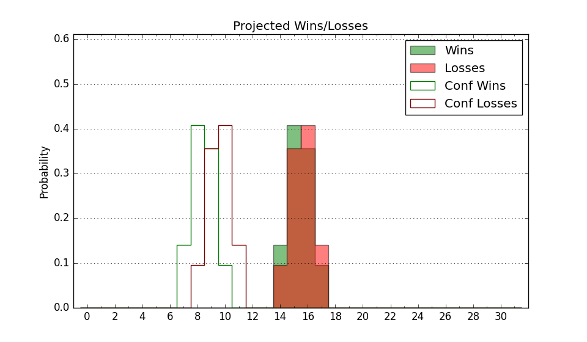

| Home | Game Probabilities | Conferences | Preseason Predictions | Odds Charts | NCAA Tournament |
| City: | Tallahassee, Florida | |
| Conference: | ACC (10th)
| |
| Record: | 7-8 (Conf) 14-14 (Overall) | |
| Ratings: | Comp.: 11.5 (80th) Net: 11.5 (80th) Off: 115.8 (79th) Def: 104.3 (90th) SoR: 0.2 (87th) |
| Remaining | ||||||
|---|---|---|---|---|---|---|
| Date | Opponent | Win Prob | Pred. | |||
| 2/28 | @ Georgia Tech (157) | 61.4% | W 82-79 | |||
| 3/4 | @ Pittsburgh (110) | 46.8% | L 74-75 | |||
| 3/7 | SMU (29) | 33.8% | L 82-87 | |||
| Previous | Game Score | |||||
| Date | Opponent | Win Prob | Result | Off | Def | Net |
| 11/4 | Alcorn St. (348) | 98.3% | W 108-76 | 13.3 | -10.8 | 2.5 |
| 11/7 | Alabama St. (303) | 96.1% | W 101-64 | 3.5 | 10.9 | 14.5 |
| 11/11 | @Florida (6) | 4.8% | L 76-78 | -0.8 | 25.0 | 24.2 |
| 11/18 | Tennessee Martin (196) | 87.7% | W 87-73 | 4.0 | -0.7 | 3.3 |
| 11/21 | Georgia Southern (263) | 93.5% | W 98-72 | -11.3 | 11.3 | 0.1 |
| 11/25 | Cal St. Bakersfield (324) | 97.0% | W 89-59 | -15.4 | 18.5 | 3.0 |
| 11/28 | (N) Texas A&M (43) | 32.1% | L 59-95 | -32.0 | -13.4 | -45.4 |
| 12/2 | Georgia (32) | 37.0% | L 73-107 | -15.8 | -20.7 | -36.5 |
| 12/6 | (N) Houston (9) | 10.6% | L 67-82 | 1.0 | 2.1 | 3.0 |
| 12/13 | (N) Massachusetts (213) | 82.9% | L 95-103 | 1.8 | -23.0 | -21.2 |
| 12/16 | @Dayton (86) | 37.0% | L 69-97 | -13.6 | -15.0 | -28.6 |
| 12/19 | Mississippi Valley St. (365) | 99.6% | W 96-49 | -6.7 | 12.1 | 5.5 |
| 12/22 | Jacksonville (306) | 96.2% | W 87-63 | 9.2 | -5.0 | 4.2 |
| 12/30 | @North Carolina (26) | 12.4% | L 66-79 | -5.9 | 6.4 | 0.4 |
| 1/3 | Duke (1) | 7.0% | L 87-91 | 28.9 | -8.6 | 20.3 |
| 1/10 | North Carolina St. (28) | 33.3% | L 69-113 | -19.0 | -29.4 | -48.4 |
| 1/13 | @Syracuse (79) | 34.7% | L 86-94 | 15.8 | -24.5 | -8.6 |
| 1/17 | Wake Forest (69) | 59.7% | L 68-69 | -10.5 | 1.7 | -8.9 |
| 1/20 | @Miami FL (36) | 16.3% | W 65-63 | -8.5 | 28.0 | 19.5 |
| 1/24 | @SMU (29) | 13.1% | L 80-83 | 12.9 | 1.0 | 13.9 |
| 1/28 | California (66) | 59.1% | W 63-61 | -17.5 | 17.2 | -0.3 |
| 1/31 | Stanford (73) | 61.9% | W 88-80 | 15.0 | -9.7 | 5.3 |
| 2/7 | @Notre Dame (93) | 40.0% | W 82-79 | 6.6 | 4.7 | 11.3 |
| 2/10 | Virginia (21) | 26.4% | L 58-61 | -21.1 | 24.2 | 3.1 |
| 2/14 | @Virginia Tech (53) | 26.5% | W 92-69 | 40.1 | 8.3 | 48.4 |
| 2/17 | Boston College (149) | 83.7% | W 80-72 | 12.3 | -10.9 | 1.3 |
| 2/21 | @Clemson (40) | 17.4% | W 70-65 | 20.4 | 8.7 | 29.1 |
| 2/24 | Miami FL (36) | 39.9% | L 73-83 | -6.7 | -6.1 | -12.8 |
| Stats & Trends | |||||
|---|---|---|---|---|---|
| Current | Day | Week | Month | Season | |
| Composite | 11.5 | -0.0 | +0.6 | +4.0 | +2.7 |
| Comp Rank | 80 | -- | +3 | +24 | -1 |
| Net Efficiency | 11.5 | -0.0 | +0.6 | +4.0 | -- |
| Net Rank | 80 | -- | +3 | +25 | -- |
| Off Efficiency | 115.8 | +0.0 | +0.6 | +2.0 | -- |
| Off Rank | 79 | -- | +10 | +21 | -- |
| Def Efficiency | 104.3 | -0.0 | +0.1 | +2.0 | -- |
| Def Rank | 90 | -1 | +1 | +37 | -- |
| SoS Rank | 60 | -1 | +5 | -8 | -- |
| Exp. Wins | 15.4 | -0.0 | +0.5 | +3.4 | -0.9 |
| Exp. Conf Wins | 8.4 | -0.0 | +0.5 | +3.4 | +0.5 |
| Conf Champ Prob | 0.0 | -- | -- | -- | -1.6 |

| Advanced Stats | ||
|---|---|---|
| Stat | Value | Rank |
| Off Eff FG % | 0.532 | 116 |
| Off Ast Ratio | 0.153 | 140 |
| Off ORB% | 0.325 | 112 |
| Off TO Rate | 0.123 | 33 |
| Off FT Ratio | 0.350 | 191 |
| Def Eff FG % | 0.504 | 140 |
| Def Ast Ratio | 0.147 | 180 |
| Def ORB% | 0.296 | 155 |
| Def TO Rate | 0.177 | 29 |
| Def FT Ratio | 0.310 | 84 |